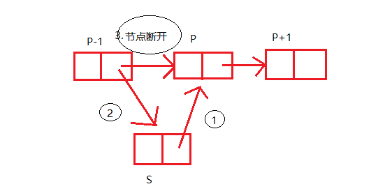

原文出处:本文由博客园博主wwww2提供。
原文连接:https://www.cnblogs.com/wwww2/p/11621589.html
原文连接:https://www.cnblogs.com/wwww2/p/11621589.html
插入节点图解



s->next = p->next;
p->next = s;
创建节点
1 typedef struct Lnode
2 {
3 ElemType data;
4 struct Lnode * next;
5 } Lnode,*LinkList;单链表的进本操作
1.创建链表
1 LinkList creatList()
2 {
3 LinkList L = (LinkList)malloc(sizeof(Lnode));
4 LinkList Ptai = L;
5 Ptai->next=NULL;
6 L->next = NULL;
7
8 printf("input length:\n");
9 scanf("%d",&L->data);
10
11 for(int i=1;i<=L->data;i++)
12 {
13 LinkList pnew = new Lnode;
14 printf("input %d data\n",i);
15 scanf("%d",&pnew->data);
16
17 Ptai->next = pnew; //尾插法
18 Ptai = pnew;
19 Ptai->next = NULL;
20 }
21
22 return L;
23 }2.遍历链表
1 void traverse(LinkList L)
2 {
3 LinkList p = L;
4 while(p->next!=NULL)
5 {
6 printf("%d ",p->next->data);
7 p=p->next;
8 }
9 printf("\n");
10 }
3.插入节点
Status insertList(LinkList L,int local,ElemType &e) { if(local<1||local>(L->data+1)) { printf("invalid input\n"); //判断插入的未知是否有效 return FALSE; } LinkList p = L; for(int i=1;i<local;i++) { p = p->next; } LinkList s = new Lnode; s->data = e; s->next = p->next; p->next = s; L->data++; //插入后长度加1 return TRUE; }
4.删除节点
1 Status deleteList(LinkList L,int pos)
2 {
3 if(pos<1||pos>L->data)
4 {
5 printf("invalid input\n");
6 return FALSE;
7 }
8
9 LinkList p = L;
10 for(int i=1;i<pos;i++)
11 {
12 p = p->next;
13 }
14
15 p->next = p->next->next;
16 L->data--;
17
18 return TRUE;
19
20 }5.单链表的取值
1 int getVal(LinkList L,int pos)
2 {
3 if(pos<1||pos>L->data)
4 {
5 printf("invalid input\n"); //判断查找的位置是否合理
6 return 0;
7 }
8
9 LinkList p = L;
10 for(int i=1;i<pos;i++)
11 {
12 p = p->next;
13 }
14
15 return p->next->data; //返回查找的值
16 }6.单链表的查找
1 int getPos(LinkList L,ElemType val)
2 {
3 LinkList p = L;
4 for(int i=1;i<=L->data;i++)
5 {
6 p = p->next;
7 if(p->data==val)
8 {
9 return i; //返回值的位置
10 }
11
12 if(i==L->data)
13 {
14 return 0; //若没找到，返回0
15 }
16 }
17 }